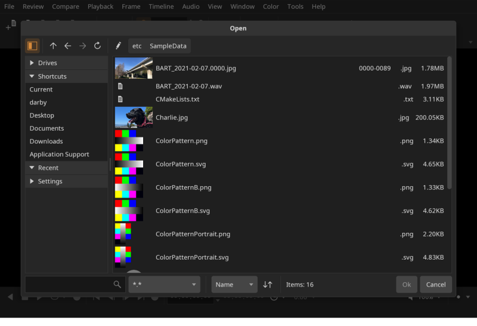
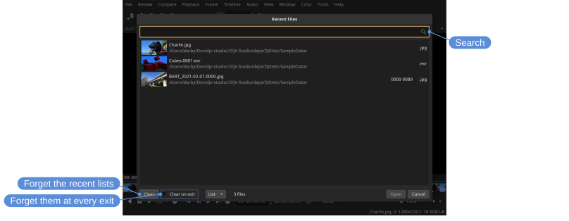
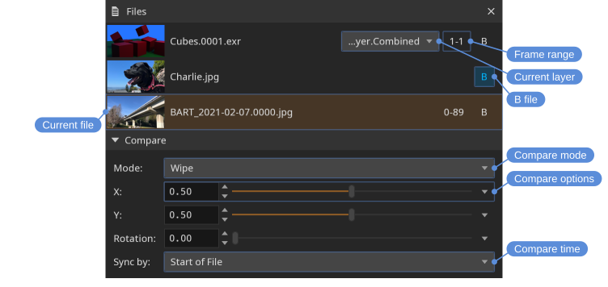

Files
Opening files, and moving between the files DJV has open: the file browser, recent files, playlists, layers, and the Files tool. For what DJV can read, and how image sequences, timelines and the other formats behave, see File formats.
Opening files
You can open files and folders in three ways:
- From the File menu or File tool bar
- By dragging and dropping onto the main window
- From the command line
Opening a folder opens every supported file in that folder. From the command line, -dirFilter filters the files by name — a case-insensitive substring, or a wildcard pattern with "*" and "?" — and -dirDepth opens that many folder levels, the default being one, the folder alone. So a whole shot tree opens as one file list:
djv shots -dirFilter "*latest*" -dirDepth 3The files keep a fixed order, grouped by folder. Folder links are listed but not followed. The options hold for the whole session, folders opened from the dialogs included.
The File menu items:
- File > Open (Ctrl/Cmd+O) and File > Open With Audio (Ctrl/Cmd+Shift+O), which pairs an audio file with the one opened
- File > Recent Files (Ctrl/Cmd+Shift+R); see Recent files
- File > Reload (Ctrl/Cmd+R) reads the current file again from disk, for a render that has been written over
- File > Close (Ctrl/Cmd+E) and File > Close All (Ctrl/Cmd+Shift+E)
- File > Export Still (Ctrl/Cmd+Shift+S); see Export Still
Image sequences can be opened from the command line by either specifying the first frame or using the "#" wildcard. For example:
djv render.#.exrThe native file browser is enabled by default on Windows and macOS. To use DJV's built-in file browser instead, change the option in the Settings tool. Linux packages are built without the native file browser, since it would mean linking to the desktop's own; there the built-in browser is always used and the option is disabled.
The built-in file browser
The built-in file browser has a panel on the left for navigation and a file list on the right:
- Drives — Mounted drives and volumes.
- Shortcuts — Common locations such as the home, Desktop, Documents, and Downloads folders.
- Recent — Recently visited directories.
- Settings — Whether the files are shown as a list with their details or as tiles of larger thumbnails, the size of the thumbnails, whether image sequences are gathered into one item, and whether hidden files are shown.
Above the file list are buttons to go up a directory, navigate back and forward, reload, and edit the current path, along with a row of path buttons for quickly jumping to any parent directory. Below the list, a search box filters by name, an extension menu filters by file type, and the sort menu and direction button order the results.
Image sequences are shown as a single item with their frame range, so a multi-thousand-frame render appears as one entry rather than thousands.

The file list can be driven from the keyboard: the arrow keys move through it, and Return opens the selection or enters a directory. When saving, a file name is suggested, and Return in the name accepts it.
Floating the file browser
The file browser normally opens over the main window, which covers whatever is playing while you choose. Turn on Floating window in the Settings tool to open it in a window of its own instead, so the media stays visible. The setting takes effect the next time the browser is opened.
A floating browser closes when a file is chosen, the same as the dialog. Check Pin in the browser to keep it open for a run of files. Whether the browser is pinned is remembered between sessions.
Escape closes a floating browser. It is overloaded: the first press puts down the file list if it has the keyboard focus, and the next one closes the browser.
Recent files

File > Recent Files lists the files opened recently, the most recent first, each with a thumbnail and the folder it is in. Type to search by name or folder; Return opens the first file found, and the down arrow moves into the list. Several files can be selected and opened together. A folder that was opened is listed as the folder, and opening it from the list opens its files again. Up to fifty are kept; the Recent menu shows the newest ten. The menu at the bottom switches between a list and tiles of larger thumbnails, as in the file browser.
Clear forgets the recent files, playlists, reviews and the folders the file browser remembers. Clear on exit does the same each time DJV exits, for a machine that is shared between clients.
Switching files
To switch between open files, use the File > Current menu, the Tab Bar, or the Files tool.
Locations: File menu, Tab Bar, Files tool
File > Next (Ctrl+Page Down) and File > Previous (Ctrl+Page Up) change to the next or previous file.
Playlists
File > Save Playlist (.otio) saves the list of open files as an OTIO file: the order, each file's in/out points, position, speed, layer, and media reference, and the A/B comparison. File > Open Playlist (.otio) opens one back into the file list.
Locations: File menu
A playlist is a plain OTIO timeline — a single video track with one clip per file — so other applications can open it, and DJV's own state rides in metadata they ignore. Opening a .otio file with File > Open plays it as a timeline in one tab; Open Playlist is what expands it into the file list. Any timeline can be opened as a playlist: multiple video tracks are flattened, and whatever the file list cannot carry — transitions, effects, markers, audio tracks — is dropped and reported in the log. A timeline of only audio opens its first audio track. A clip with a range but no saved position starts at its in point. The file being opened is never modified.
A .otioz bundle opens as a timeline only: its media lives inside the bundle, so its clips cannot become entries in the file list.
Media references are saved relative to the playlist's directory when the media is under it, so a playlist saved above its media can move with it. Everything else is saved with an absolute path.
A playlist holds the file list and the comparison. Color, view, and window state stay in the settings.
Memory cache
DJV caches frames in memory for smooth playback and scrubbing. The cache is configured in the Settings tool, with separate values for video, audio, and read-behind. Read-behind is the number of seconds cached before the current frame, which keeps scrubbing responsive when moving backward.
Only the current file is cached. Switching files clears the cache and reloads it for the new file.
The sizes start at a quarter of the memory the machine has for them, and cannot be set past what it has: its memory less the couple of gigabytes DJV itself takes to run. The Settings tool says what that comes to, e.g. 8 of 62 GB. That is not a promise of free memory, since whatever else is open has its own share.
The cache sizes are budgets for decoded frames and audio, not a limit on how much memory DJV uses. The decoders for playback, a second set for the timeline thumbnails, the thumbnail and waveform caches, the GPU, and the application itself come on top; together they are roughly a fixed amount rather than a share of the cache, and grow with the resolution of the media and the number of processor cores. The audio cache fills with as much of the in/out range as fits, so a long file uses all of it. System monitors also usually count the shared libraries DJV loads, which adds a few hundred megabytes that are not DJV's own. The Diagnostics tool shows the memory held by images, audio, and the GPU as it changes.
Layers
For files with multiple layers (such as multi-part OpenEXR), the active layer can be changed from the File > Layers menu or from the Files tool.
Locations: File menu, Files tool
File > Next Layer (Ctrl+=) and File > Previous Layer (Ctrl+-) step through the layers.
From a script, File/Layer chooses one by name or index, e.g., -command 'File/Layer { "layer": "diffuse" }', for the A file or, with "file", the one at that index in the file list (see Automation).
Files tool
The Files tool is the central place for managing open files: it sets the current file, picks active layers, and configures comparison.
Locations: Tools menu, Tools toolbar
Open it with Tools > Files (F1).

- Current file (the A file)
- B files (multiple B files can be set in tile mode)
- The frame range of an image sequence, which can be edited to open the sequence over a different range (see Partial image sequences)
Click a file to make it the current file, or drag it to reorder the list. The order is what a playlist saves, and what the next and previous file actions step through. When the drag reaches the top or bottom of the panel the list scrolls, so a spot that is off the screen can be reached.
The list can be driven from the keyboard: the arrow keys browse it, Return sets the current file, and Delete closes one.
Reviews
Reviews — saved sessions with markers and drawn feedback — have a page of their own: Review.